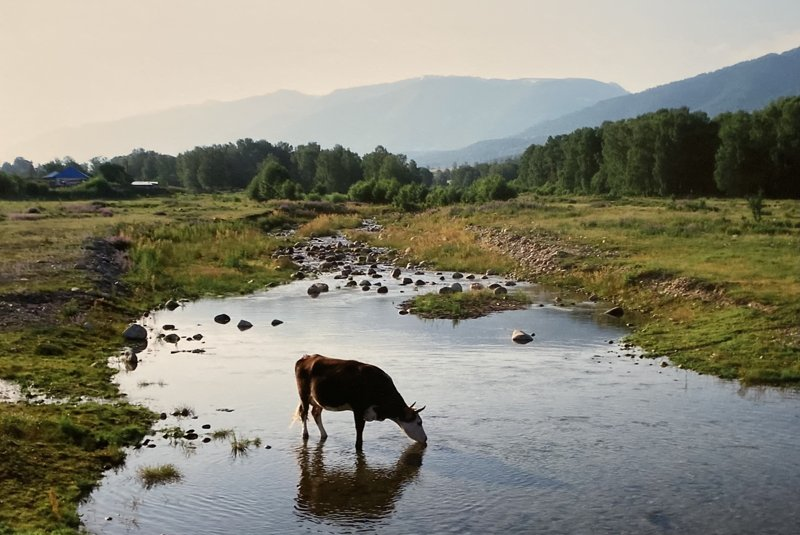

草野善太（くさの・ぜんた、1987年－）は、日本の書籍編集者。人文・社会科学の学術書を中心に、教科書、思想・批評、心理・行動科学などの領域で編集・出版活動に従事している。

| 基本情報 | |
| 生年 | 1987年、福島県生まれ |
|---|---|
| 肩書 | 書籍編集者 |
| 所属 | ミネルヴァ書房 編集部 |
| 担当 | 人文・社会科学系書籍／大学教科書 |
| 関心領域 | |
| 言語／思想／政治理論／宗教／進化論 | |
現在、企画として関心がある主題
※下記に限らず、人文・社会科学領域の書籍企画について広くご相談ください。
①〈声〉を主題とした研究書、批評、教科書——様態的存在論序説
②生成AI時代の「文体練習」——もうすぐ絶滅するという翻訳という営みについて
③マルクス、フロイト、ニーチェ――近代啓蒙の底が抜けた力の時代
④コミュニケーション論――抽象的価値基準なき場の創出と維持は（不）可能か？ ←New！
⑤文明論――地政学・地質学・進化論ベース以外の語り方 ←New！
担当書籍


編集についての考え方・取り組み
書籍企画を考える際、私は「必然性・社会性・資産性」という三つの軸を意識しています。なぜこの著者がこの本を書くのかという過去からの必然、いまの学術や社会にどう介入するのかという現在性、そして刊行後に著者・出版社・読者それぞれに何を残すのか、そしてその本で何をしていくのか、何がなされていってほしいか、何と接続されていってほしいか、という未来への持続性です。これらを著者・出版社・読者の三つの立場から考え、九つの観点から企画の輪郭を探ります。そのうえで、研究の核を損なわず専門領域の外へ射程を開き、書名、構成、目次、文章へと「読む・つくる理由」を具体化していくことを、編集の仕事だと考えています。
| 必然性（過去） | 社会性（現在） | 資産性（未来） | |
|---|---|---|---|
| 著者 | これを書かざるをえない経緯があるか | 学術的・社会的文脈に応答しているか | 今後の研究キャリアを長く育むものか |
| 出版社 | 刊行実績や理念と深く結びついているか | 社会的議題に介入しうる力があるか | 今後利益・評価・ブランド強化になるか |
| 読者 | 自分の問題として引き受けざるをえないか | 社会の見方を変えるきっかけになるか | 参照され読み返され続ける価値があるか |
来歴
1987年福島県生まれ。2006年に埼玉大学理学部分子生物学科に入学後、2009－2010年にかけて美大予備校に通い、東京藝術大学への入学を志すも受験失敗。埼玉大学教養学部への転学準備中に東日本大震災で被災。一か月ほど被災地で過ごし埼玉に戻る。一年の休学を経て教養学部へ編入。同大教養学部を卒業後、2014年に京都大学大学院文学研究科博士前期課程（フランス語学フランス文学専攻）に入学。その間、参加した翻訳会で、フリードリヒ二世『反マキアヴェッリ論』とジャック・ネッケル『穀物立法と穀物取引について』（いずれも共訳、京都大学出版会）にかかわった。
2020年に同大学院博士後期課程を中途退学。のち2021年秋にミネルヴァ書房へ入社し営業部に配属される。北陸・中四国・滋賀・京都エリアを担当。主に大学講義用の教科書営業で各エリアを巡回。その後2024年秋に編集部へ異動となり、現在に至る。